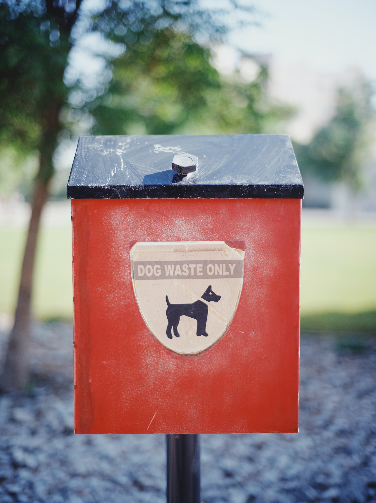
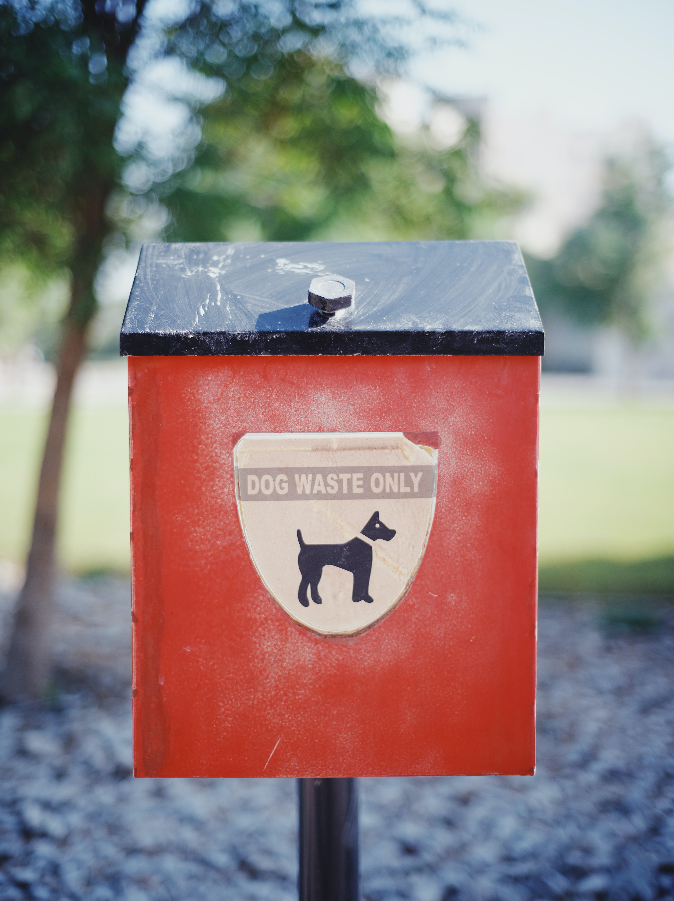
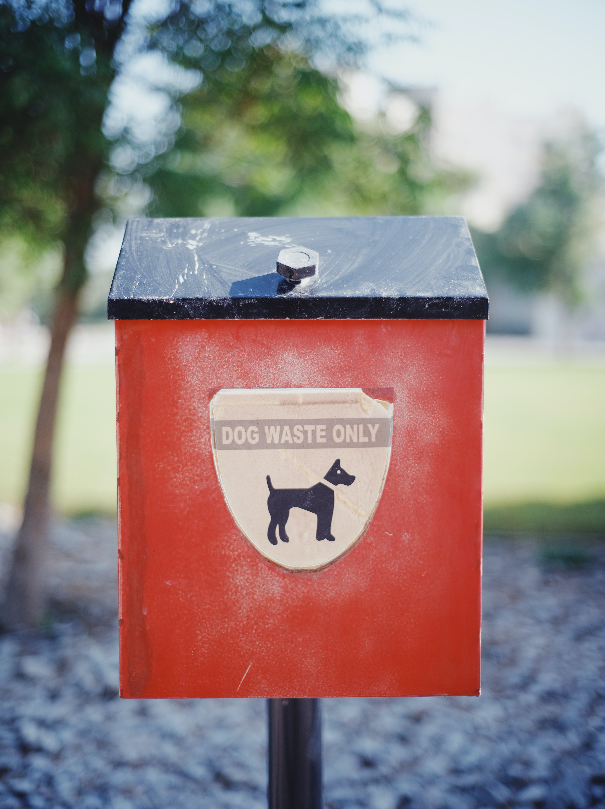

Are you at a loss for what to do with your dog's poop? Do you want to help the environmet?
Well then Poop Scoop may be for you! Poop Scoop is an at home service that picks up your dog's poop
and brings it to our state of the art composting facility. There we use bacteria to break down
your dog's poop naturally. This is an eco friendly alternative to sending your dog's poop to a landfill,
where it cannot compost properly, and ends up leeching greenhouse gas into the environment.
Doggo and environment approved!

We all love our four legged best friends.
But what to do with their poo?
Traditional methods can be an issue for the environment.
Let Poop Scoop take on the hassel of handeling your dog's waste, so you
can spend more time with your best friend, and less time worrying about poo.
"Easy peasy! I simply place my dog's waste into the provided waste container,
and they pick it up, done. I can't tell you how good it feels to know
I'm caring for the environment, and with no additional stress to myself!"
 
